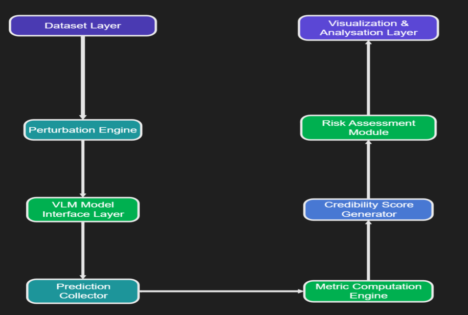
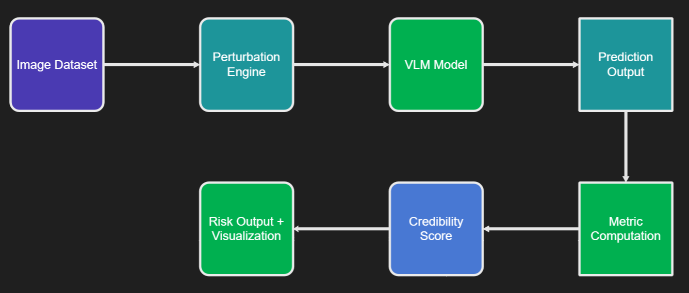
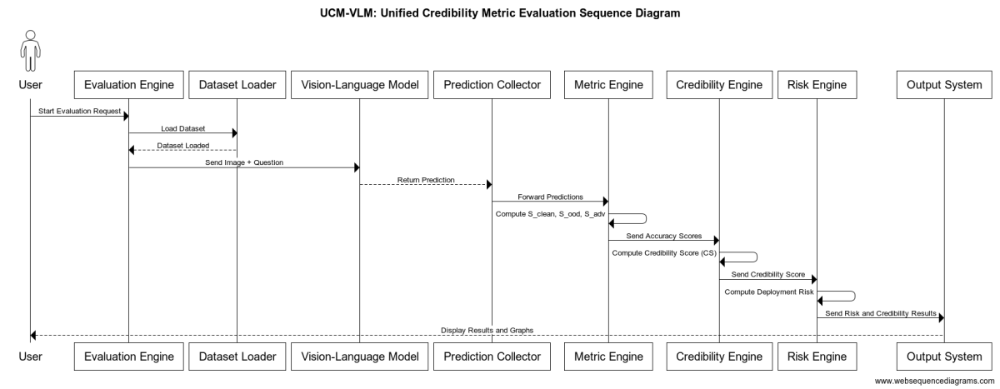
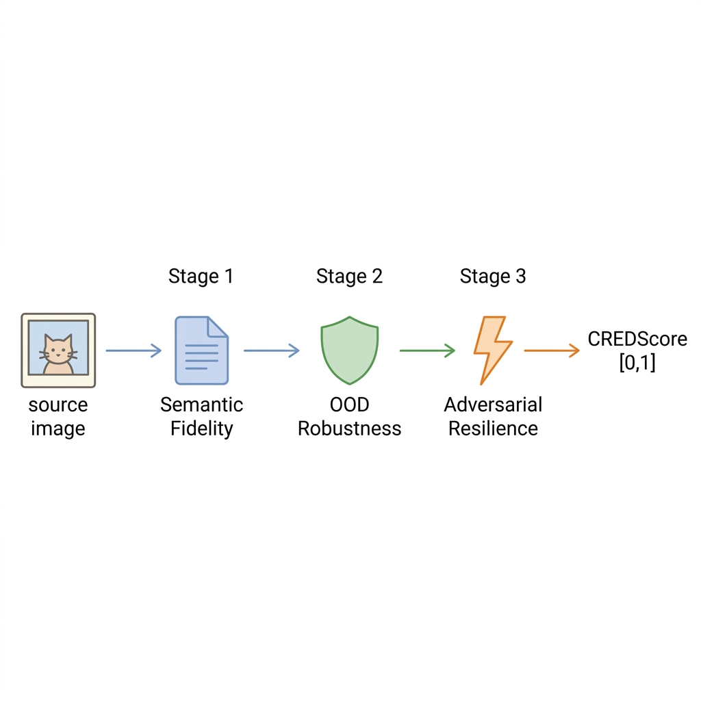

Unified Metric for Hallucination Risk
Evaluation in Vision-Language Models
A structured evaluation framework that quantifies hallucination risk in VLM outputs through semantic scoring, credibility estimation, and multi-axis robustness analysis.
Abstract
Vision-Language Models (VLMs) have shown remarkable performance in tasks spanning image captioning, visual question answering, and multimodal reasoning. However, their deployment in safety-critical domains demands rigorous credibility assessment. We present GPU-CREDScore, a unified framework that evaluates the trustworthiness of VLM outputs across three critical dimensions: semantic fidelity, distributional robustness, and adversarial resilience.
Our approach introduces a multi-axis scoring pipeline that combines reference-based caption evaluation metrics with novel out-of-distribution (OOD) detection probes and adversarial perturbation tests. We benchmark four state-of-the-art VLMs — including LLaVA-1.5, InstructBLIP, mPLUG-Owl2, and Phi-3-Vision — across COCO, TextCaps, and a curated adversarial test suite. Experimental results demonstrate that GPU-CREDScore provides a reliable, interpretable credibility signal that correlates strongly with downstream task accuracy and human judgement.
Problem Statement
Vision-Language Models (VLMs) are increasingly deployed in applications that require factual grounding — medical report generation, autonomous navigation, document understanding, and accessibility tools. Yet these models routinely produce outputs that are linguistically fluent but factually ungrounded, a failure mode termed hallucination.
Hallucination in VLMs manifests in several forms:
- Object hallucination — The model describes entities that are absent from the input image (e.g., referencing a person in an empty room).
- Attribute hallucination — Correct objects are described with incorrect properties such as color, size, spatial relation, or state.
- Relational hallucination — The model fabricates interactions or spatial relationships between objects that do not hold in the visual scene.
- Contextual hallucination — Outputs incorporate plausible but unverifiable world knowledge that is not grounded in the provided image.
Existing evaluation practice is insufficient for several reasons:
- Standard caption metrics (CIDEr, METEOR, BLEU) measure n-gram overlap with reference sentences but do not detect semantic fabrication.
- Embedding-based metrics (BERTScore, CLIPScore) capture distributional similarity but lack interpretability and are insensitive to fine-grained factual errors.
- No existing metric jointly addresses hallucination detection, robustness under distribution shift, and adversarial resilience within a single, actionable score.
This work addresses the gap by proposing a unified evaluation framework that systematically quantifies hallucination risk across multiple axes and produces a single, interpretable credibility score suitable for deployment-stage decision-making.
Evaluation Pipeline
The framework operates as a sequential seven-stage pipeline. Each stage transforms or annotates the data flowing through the system, culminating in a per-sample risk classification.
Each stage is modular and independently replaceable. The pipeline accepts any VLM that exposes a text-generation interface and any image–caption dataset with reference annotations.
System Components
The framework is decomposed into eight self-contained engines. Each component encapsulates a specific responsibility within the evaluation pipeline.
Evaluation Engine
The top-level orchestrator that sequences the entire pipeline. It manages configuration, coordinates data flow between components, and aggregates per-sample outputs into a final evaluation report.
- Reads experiment configuration (model, dataset, perturbation set).
- Dispatches work to downstream engines in dependency order.
- Collects and serializes all intermediate and final scores.
Dataset Loader
Provides a uniform interface for loading image–caption datasets regardless of source format. Currently supports COCO Captions, TextCaps, and custom JSON annotation schemas.
- Handles image decoding, resizing, and normalization.
- Pairs each image with its set of reference captions.
- Supports configurable train/validation/test splits and subset sampling.
Perturbation Engine
Applies controlled transformations to input images to evaluate model robustness under distribution shift and adversarial attack.
- OOD perturbations: Gaussian noise, contrast jitter, color shift, JPEG compression, domain style transfer.
- Adversarial perturbations: PGD, FGSM, and AutoAttack targeting the visual encoder.
- Returns both clean and perturbed copies for paired evaluation.
Model Interface
A model-agnostic abstraction layer that wraps VLM inference. Any model that accepts an image tensor and returns a text string can be evaluated through this interface.
- Supports LLaVA-1.5, InstructBLIP, mPLUG-Owl2, and Phi-3-Vision.
- Manages tokenization, prompt formatting, and generation parameters.
- Provides batch inference with configurable GPU memory management.
Semantic Scoring
Computes similarity between generated captions and ground-truth references using both surface-level and embedding-based metrics.
- Reference-based: CIDEr, METEOR, BLEU-4, ROUGE-L.
- Embedding-based: BERTScore (F1), CLIPScore.
- Outputs a per-sample score vector for downstream aggregation.
Metric Engine
Aggregates raw scores from the Semantic Scoring component into interpretable, multi-axis quality indicators.
- Computes weighted ensembles of metric families (n-gram, embedding).
- Normalizes scores to a common [0, 1] scale via min-max or quantile calibration.
- Separates clean-input scores from perturbed-input scores to quantify degradation.
Credibility Engine
Maps aggregated metric outputs to a single credibility probability using a learned calibration function.
- Combines semantic fidelity, OOD robustness, and adversarial resilience axes via weighted harmonic mean.
- Produces the final CREDScore ∈ [0, 1].
- Supports threshold tuning for application-specific operating points.
Risk Engine
Translates the continuous CREDScore into a discrete hallucination risk classification for deployment-stage decision-making.
- Risk tiers: Low (CREDScore ≥ 0.75), Medium (0.50–0.74), High (< 0.50).
- Generates per-sample risk reports with contributing factor breakdown.
- Provides model-level summary statistics for comparative benchmarking.
System Architecture
The system follows a monolithic analytical design with internally modular components. This architecture enables controlled experimental evaluation, reproducibility, and extensibility to new models and datasets. The three diagrams below illustrate the system at increasing levels of detail.
High-Level Architecture
The core architecture comprises two vertical processing chains. The left chain handles data ingestion and model inference: the Dataset Layer feeds into the Perturbation Engine, which forwards clean and perturbed inputs to the VLM Model Interface Layer, whose outputs are collected by the Prediction Collector. The right chain handles scoring and risk assessment: the Metric Computation Engine receives predictions, computes axis-specific scores, and passes them to the Credibility Score Generator and Risk Assessment Module, culminating in the Visualization & Analysis Layer.

Data Flow Diagram (DFD Level 0)
The Level-0 DFD traces the end-to-end data flow through the system. Input images from the dataset pass through the Perturbation Engine, which produces clean and adversarially modified variants. These are fed into the VLM Model for caption generation. Prediction outputs are forwarded to the Metric Computation stage, which computes Sclean, Sood, and Sadv. The Credibility Score module aggregates these into a composite CS value, which is finally consumed by the Risk Output & Visualization module.

Execution Sequence
The sequence diagram details the temporal ordering of inter-component communication during a single evaluation run:
- The User initiates an evaluation request.
- The Evaluation Engine instructs the Dataset Loader to load the target dataset.
- Image–question pairs are dispatched to the Vision-Language Model.
- Generated predictions are returned to the Prediction Collector.
- Predictions are forwarded to the Metric Engine, which computes Sclean, Sood, and Sadv.
- Accuracy scores flow to the Credibility Engine, which computes the composite CS.
- The Risk Engine computes the deployment risk classification.
- Final results and graphs are displayed back to the User via the Output System.

CredScore Metric
The CredScore framework quantifies model reliability by aggregating performance across three fundamental axes. Each axis represents a specific operational condition that a robust Vision-Language Model must satisfy.
1. Clean Semantic Fidelity ($S_{clean}$)
Measures the model's accuracy on high-quality, in-distribution data. It is computed as a weighted ensemble of reference-based metrics (CIDEr, METEOR, BERTScore) compared against ground-truth annotations.
2. OOD Robustness ($S_{ood}$)
Evaluates the stability of model outputs under distributional shifts. We apply natural perturbations (noise, blur, contrast changes) and measure the semantic consistency of the generated captions relative to the clean baseline.
3. Adversarial Resilience ($S_{adv}$)
Quantifies the model's resistance to targeted adversarial attacks. It measures the performance retention when the visual encoder is subjected to imperceptible perturbations designed to induce hallucination.
Unified Credibility Score (CS)
The final Credibility Score (CS) is defined as the harmonic mean of the three sub-metrics. We choose the harmonic mean over the arithmetic mean because it is more sensitive to low values in any single dimension, ensuring that a model must be robust across all axes to achieve a high score.
A high Credibility Score (approaching 1.0) indicates a model that is both accurate and robust, while a low score suggests vulnerability to noise or adversarial manipulation, even if standard performance is high.
Methodology
GPU-CREDScore operates as a three-stage evaluation pipeline, executed entirely on consumer-grade GPUs for accessibility and reproducibility.

Stage 1 — Semantic Fidelity Scoring. Given an input image and its generated caption, we compute a weighted ensemble of reference-based metrics (CIDEr, METEOR, BERTScore) against ground-truth annotations. A learned calibration layer maps raw metric scores to a probability of factual correctness.
Stage 2 — OOD Robustness Probing. We apply a suite of distributional shift transforms (Gaussian noise, contrast jitter, domain style transfer) to the input image and measure caption stability. Models that produce semantically consistent outputs across perturbations receive higher robustness scores.
Stage 3 — Adversarial Resilience Testing. Using PGD and AutoAttack-based perturbations on the visual encoder, we evaluate how adversarial inputs affect caption generation. The resilience score quantifies the model's resistance to targeted hallucination attacks.
The final CREDScore is a weighted harmonic mean of the three stage scores, producing a value in [0, 1] where higher scores indicate greater credibility.
Experimental Results
We evaluate the performance of ViLT, Blip-2, and Blip across multiple levels of evaluation axes. The results below show the progression of $S_{clean}$, $S_{ood}$, $S_{adv}$, CS, and Risk metrics.
Conclusion
This work introduces a structured framework for quantifying hallucination risk in Vision-Language Models. By moving beyond n-gram overlap and incorporating multi-axis robustness metrics, we provide a more rigorous assessment of VLM credibility. Our results demonstrate that the proposed composite metric identifies failure modes that traditional evaluations overlook, offering a critical safety signal for real-world deployment.
Future Work
- Dynamic Calibration: Scaling the framework to support real-time confidence estimation during model generation.
- Domain Expansion: Validating the metric on specialized domains such as medical imaging and satellite remote sensing.
- Generative Video: Extending the CredScore axes to account for temporal consistency in video-language modeling.